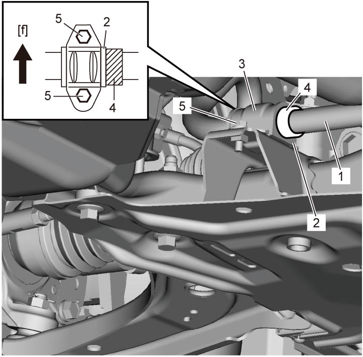

2B
| Stabilizer Bar Bushing Removal and Installation |
Removal
1)Remove exhaust No.1 pipe and exhaust center pipe.
•M16A model: 
•K14C model:
•D16AA model:
•K14C model:
•D16AA model:
2)Remove stabilizer bar mounting brackets (3) and bolts (5).
3)Remove stabilizer bar bushings (2).


 "Expand image")
| [f]: | Forward | 4. | Ring |
| 1. | Stabilizer bar |
Installation
Reverse removal procedure noting the following point.
•When installing stabilizer bar bushings and stabilizer bar mounting brackets, refer to Step 1) – 2) of Installation procedure in Front Suspension Frame, Stabilizer Bar and Bushing Removal and Installation.